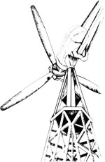

With the help of a couple of important federal financial incentives, it can make sense to ...
In the last five years, the use of wind energy has enjoyed a powerful resurgence in the United States. And the proliferation of machines that employ moving air to generate electricity can largely be attributed to two pieces of federal legislation, both of which resulted from the recognition of our nation's energy predicament back in the 1970's. These two important incentives can actually turn a wind system that costs as much as $3,000 per kilowatt of capacity into a wise financial investment.
YOU, THE FRIENDLY LOCAL UTILITY
In 1978 Congress passed the Public Utility Regulatory Policies Act (PURPA), which contains a provision, Section 210, that-among other things-specifies that utilities must buy power from (and sell power to) independent producers of electricity who utilize renewable sources of energy. Under PURPA, an owner of a wind machine is guaranteed a connection with his or her local utility.
The wind systems of a couple of generations ago had battery banks to store their excess production. These plants were designed to be electrically independent, simply because there was no centralized source of power in the form of a utility grid. Admittedly, windplants of the 20's and early 30's were far better than the alternatives: motor generators or no electricity at all. But when the wind stopped blowing for extended periods, their battery banks did eventually go flat. And, until the wind came up again, the residents either had to fire up a backup generator or go without electricity.
Today the utility grid can offer a windmachine owner an essentially unlimited source of backup power. And the utility's interconnection charge-which the system owner must bear-is far less than the cost of buying and maintaining a battery bank.
Hooking into the grid provides another important benefit, in the form of a constant customer for excess electrical production. Since a wind machine's capacity will sometimes be greater than the amount of power that's needed (in the middle of a windy night, for example), it's very convenient to have someone around to purchase the excess.
PURPA requires utilities to buy electricity from qualifying independent producers at rates based on what is called avoided cost. This figure is determined by what it would cost the utility to produce that electricity. Because there's a tremendous variation in the actual avoided costs of different power companies, and because there are a number of different ways to go about calculating them, buy-back rates vary from about 1 cents per kilowatt-hour (kwh) in some midwestern states to as much as 10 cents per kwh in California and parts of the Northeast.
However, regardless of your location, you'll never get rich by selling power from your home-size wind machine to a utility. Because the power company pays less than retail for power it buys, your best bet is to use as much of your home-generated electricity as possible. Unfortunately, some utilities require that all generated power be sold directly to them (at buy-back rates, of course) and that all power consumed at the site be purchased from the utility at retail rates. This provision-which is often called parallel (as opposed to series) interconnection-can make tying into the utility's grid a financial bust!
TAX INCENTIVES
Because of a variety of federal and state tax incentives, it's possible to write of as much as 90% of the initial cost of a wind-powered electric system. One of the decisions you'll have to make, however, is whether you'll consider your windplant to be a home appliance or a piece of business equipment.
Domestic applications: The federal residential renewable-energy tax credit allows an individual to deduct up to 40% of the first $10,000 spent on a wind machine. This will result in a direct reduction in the amount of tax paid in the year that the equipment is purchased.
In addition, 19 states offer similar direct tax credits, and a total of 37 states have some sort of direct or indirect incentive. The indirect incentives may be in the form of tax deduc tions (from gross income), exemption from sales and/or property tax, and/or a combination of rebates or refunds to the purchaser.
Finally, an individual may deduct the interest paid on a loan used to buy a windplant, as well as any sales tax that may have been added to the purchase price.
Business applications: There's a federal 15% renewable-energy tax credit for businesses that install wind machines to serve their enterprises' electrical needs. In addition, if enough of the power produced from a residential system goes to the utility grid, the owner may be considered to be in the business of producing electricity. This can be ticklish for small systems connected in series, but all parallel connected systems should qualify as power-producing businesses.
The federal government also provides a 10% investment tax credit. This can trim yet another 10% off the taxes paid by a business. And the Internal Revenue Service allows wind systems to be depreciated over a five-year period (under Accelerated Cost Recovery), which means that a percentage of the machine's cost can be deducted from business income each year over a five-year period.
THE ENERGY FUTURE
Researchers think that the cost of electricity will continue to rise at a rate of 15 to 30% annually, once the current leveling in cost has passed. They also suggest that another major energy crisis can be expected in the 1990's. Thus, the development of wind energy, wherever it's practical, is vital to both our personal and national well-being.
At present, the tax and utility interconnection incentives are crucial to the feasibility of wind-energy systems. Unfortunately, the renewable-energy tax credit is due to expire in 1985. And, as of this writing, a renewal bill has failed to make its way through Congress. If you'd like to develop your own wind system in the next few years, you may want to contact your representatives and senators and urge them to support a continuation of these incentives.
EDITOR'S NOTE: Readers who are interested in developing wind systems for far less than the going commercial rate may want to build their own small DC plants by using plans developed by Marshall Price. These machines can produce DC power to be used independently from the utility; or, with the proper synchronous inverter, the electricity can be tempered and sold to the power company. The plans are available for $15-plus $1.00 shipping and handling-from Mother's Plans, P.0. Box A, East Flat Rock, NC 28726.
|
 |
|
|